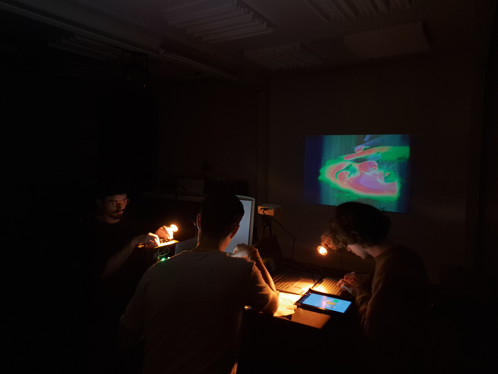

Scanner Voador
2025
Shown at PEMS Digitópia (Casa da Música, Porto), P.Porto Open Campus 2025, Sonoscopia, Festival APUROS2024.
David Amaral - Diogo Nóbrega - Pedro Mota - Rodrigo Neto

2025
Shown at PEMS Digitópia (Casa da Música, Porto), P.Porto Open Campus 2025, Sonoscopia, Festival APUROS2024.
David Amaral - Diogo Nóbrega - Pedro Mota - Rodrigo Neto